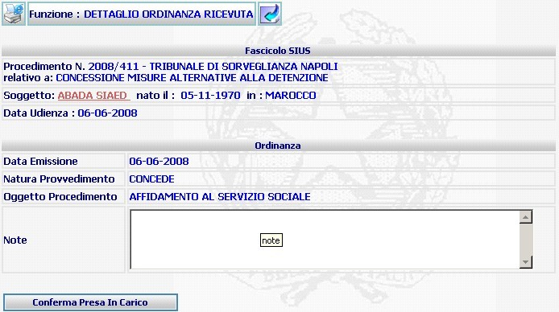

DETTAGLIO ORDINANZA RICEVUTA: La funzione consente di visualizzare nel dettaglio i dati dell'atto ricevuto e confermarne la presa in carico.
LE MASCHERE VIDEO
La funzione in esame "DETTAGLIO ORDINANZA RICEVUTA", viene realizzata attraverso l'utilizzo della seguente maschera che a sua volta è suddivisa nelle seguenti sezioni:
Fascicolo Sius;
Ordinanza;
N.B.:nell'esempio che segue l'atto ricevuto è un'ordinanza; nel caso di ricevimento di un altro tipo di provvedimento, la struttura della maschera rimarrà invariata mentre cambierà la dicitura della funzione e l'intestazione della natura dell'atto riportata nella seconda sezione.

COME FARE PER ...
| Per confermare la presa in carico dell'atto ricevuto l'utente deve agire sul bottone |
PULSANTI
Sono presenti
i pulsanti di stampa
 del contesto (videata) e "torna
indietro"
del contesto (videata) e "torna
indietro" 
BOTTONI
Oltre ai comandi funzionali relativi al menù verticale sono presenti i seguenti comandi:
|
COMANDI |
DESCRIZIONE |
|
|
A fronte di tale comando, il sistema, conferma la presa in carico atti e invia all'ufficio mittente il rapporto di trasferimento atto di conferma presa in carico da parte dell'ufficio destinatario. |